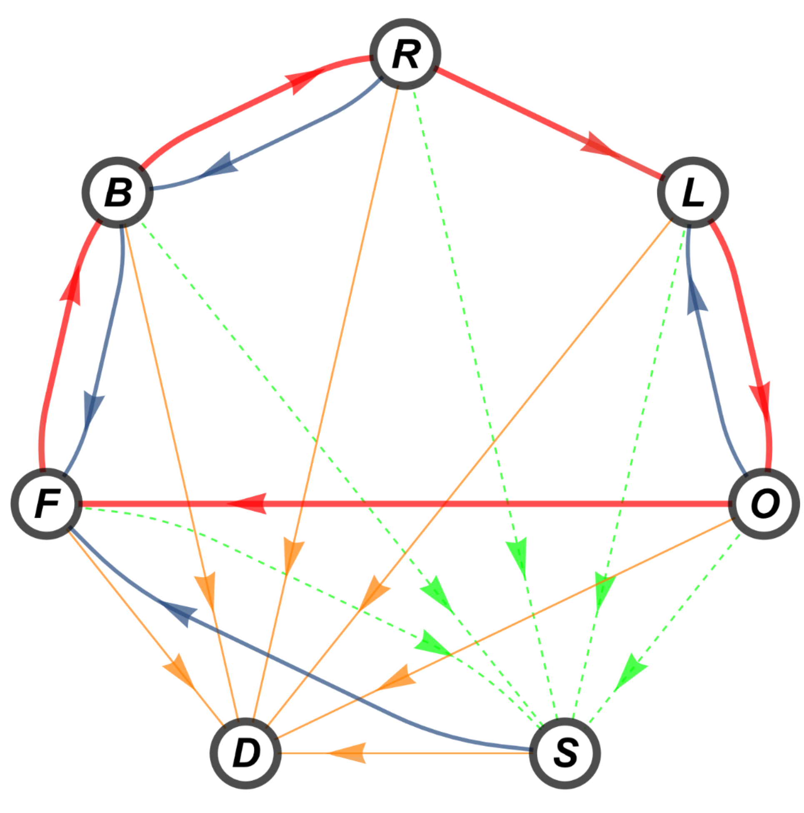
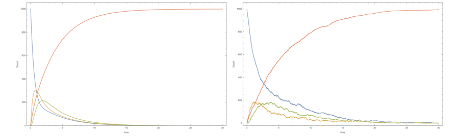
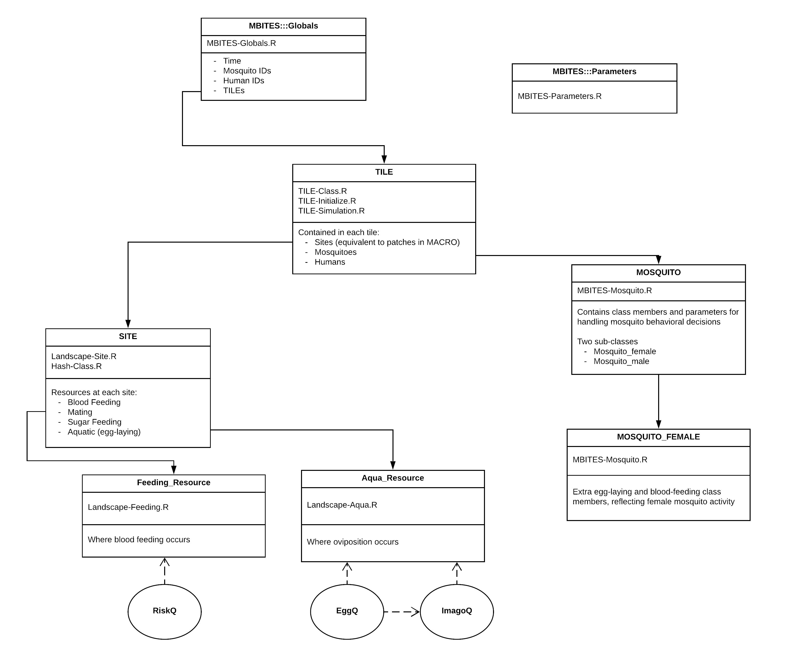
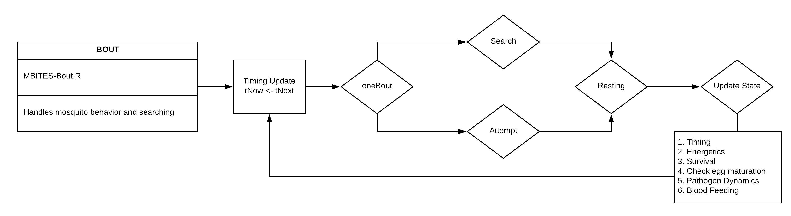
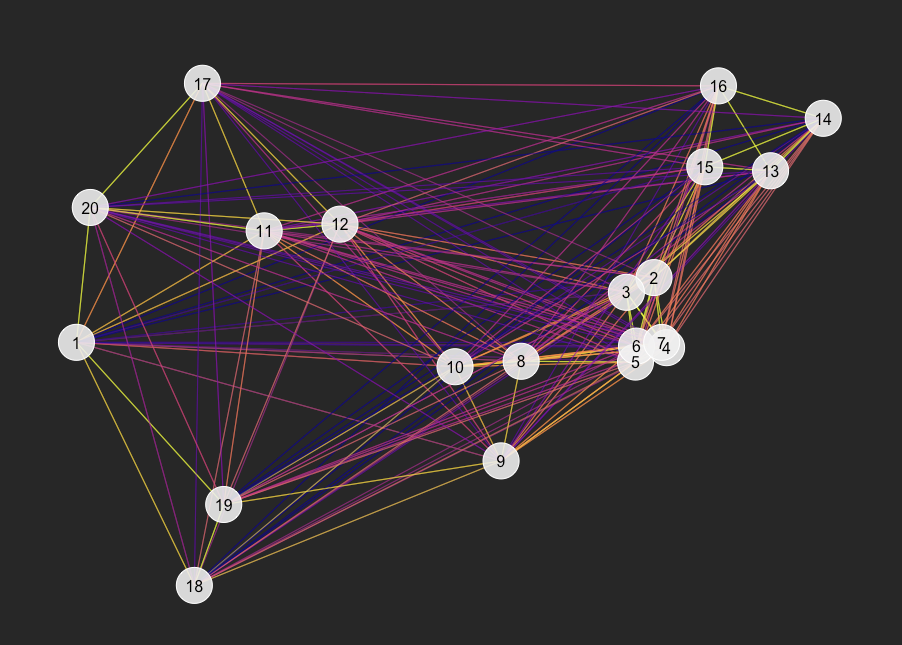
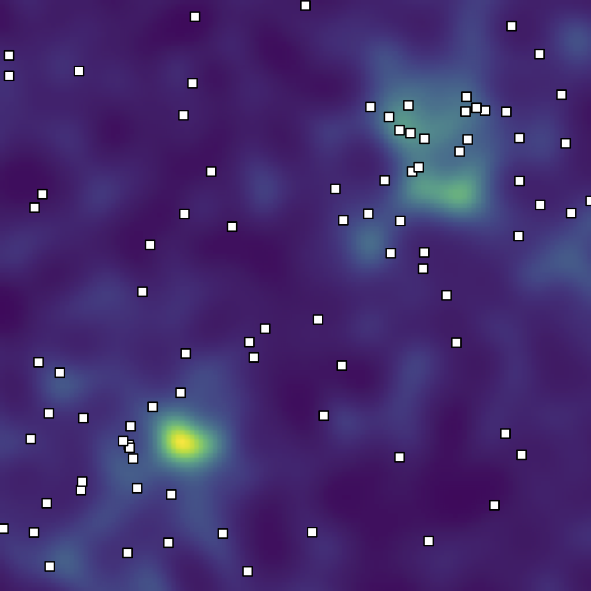
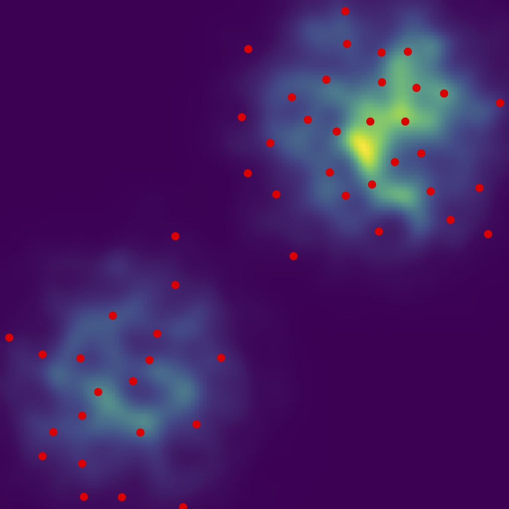
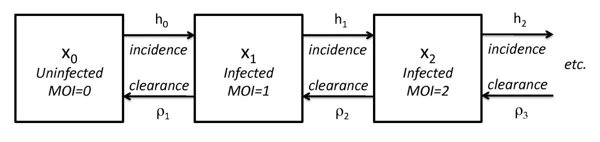

M-BITES (Mosquito flight Bout-based and Individual-based Transmission Ecology Simulator)
University of California, Berkeley
Sean Wu, Biyonka Liang, Héctor M. Sánchez C.
Institute for Health Metrics and Evaluation, Seattle
Daniel Citron, Qian Zhang, John Michael Henry, David L. Smith
Agenda 1. Theory of Mosquito-borne Pathogen Transmission 2. Simulating Mosquitoes 3. M-BITES Software 4. Simulating Ecology 5. Pathogen Transmission 6. Related Projects Theory of Mosquito-borne Pathogens Classical models are based on the Ross-Macdonald framework
Theory of Mosquito-borne Pathogens Under a restricted set of assumptions, a set of quantities describes transmission: Because reality is not a set of coupled ODEs, M-BITES builds upon these simple models while being amenable to mathematical analysis in restricted cases.Simulating Mosquitoes
We describe mosquito behavior as a sequence of flight bouts to accomplish a biological imperative.
This description provides a specification for continuous time discrete event simulation.

Simulating Mosquitoes Simulating Mosquitoes Simulating Mosquitoes Approximating deterministic ODE and PDE models have been developed to describe mean behavior of the system under restricting assumptions.

M-BITES Software
Agents communicate with each other through the landscape.

M-BITES Software
Mosquitoes simulate a series of behavioral bouts, each to accomplish a specific task, from launching to landing
Survival, including mortality from exhaustion, wing tattering, and other factors is also simulated
Activity consumes energy, replenished by sugar or blood feeding, and low-energy mosquitoes may seek sugar

Simulating Ecology Spatial distribution of resources structures mosquito movement.

Simulating Ecology The spatial point pattern of resources is itself structured by various processes.


Simulating Ecology Both of these processes, as well as human distribution of time-at-risk, determine how mosquitoes use a landscape. Pathogen Transmission M-BITES will support a suite of Pf models (and other pathogens to come).
PfSI: Enhanced SIS Model
PfMOI: Multiplicity of Infection Model

PfLOME: Lifetime Ontogeny of Malaria Epidemiology
Pathogen Transmission Transmission simulation can help provide synthetic data to test algorithms for transmission chain reconstruction, for example. Related Projects Investigation of optimal combinations of interventions for Malaria Elimination Initiative (UCSF) Related Projects MGDrivE, developed at Marshall Lab (UC Berkeley) by Héctor M. Sánchez C., Sean Wu, Jared Bennett, and John M. Marshall